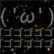
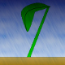
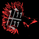

絵師一覧  ナギ(表紙絵) 絵師にして、作者にして、まとめ人。何でもできる、ブーン系界が誇る最終兵器的な人である。今回は企画の表紙絵も書いて頂きました。 Blog, Pixiv  霧野*七芽 ブーン系において絵師が猛威を振るった時代がございました。その当時、八面六臂の獅子奮迅、比類なき活躍をした4人の絵師の内の一人が七芽さんだったのです(回想はフィクションを含みます)。 Site, Twitter  雨冠 柔らかい感じの絵を書く絵師さん。肉が食べたいらしい。なぜ肉なのか、肉が好きなのか！？ 肉食系女子の生態を知らたい皆さん必見です。 Profile, Twitter トップ | 企画について | 募集 | 作品 | リンク